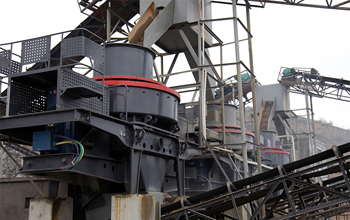

Sand making machine equipment can increase productivity, and now mostly use domestic production sand making production line, the material through a series of workflow sand making equipment, and finally made after Jingxi sand washing machine finished sand, of which there are many steps We can effectively improve and enhance the production efficiency of the equipment.
Sand making machine for advanced equipment consisting of sand making production line, how to improve their work efficiency, reduce their investment costs, I think it would be the majority of users are more concerned about the fact that there is a coup, which will be based on the function of sand making production line Characteristics effective to use, and effective use of sand making production line features to enhance the yield is very helpful. According to reports, mining machinery manufacturing industry as the sole basis for producing countries to establish industrial system is an important pillar industry of national economy, cement equipment, the development of the country has a huge impact. With increasing urbanization, west, highway, construction of affordable housing, a series of activities, such as nuclear power construction investment, mining machinery market is destined to increase demand.
With the effect of government policies to stimulate domestic demand gradually rendering and improved international situation, under the principle of national "Twelfth Five-Year Plan" and the adjustment of industrial structure, sand making equipment and sand making production line facing a huge market investment opportunities. Mining, the use of sand making equipment, guide tailings sand, artificial sand, gravel instead of natural sand, gravel as aggregate concrete building, the protection of the environment, land development and construction, make full use of waste resources of great strategic significance.
In recent years, mining machinery sand making machine equipment market has actually been more active, increasing domestic demand for sand making machine industry as one of the important equipment, sand making machine equipment is also granted the application is very extensive, sand making machine equipment demand, prompting sand making equipment market will continue to shine. The trend of previous years, this year prices generally been complaining sand making machine, which is mainly due to the poor quality of sand making machine being phased out, while the high quality sand making machine equipment in many informal small businesses unable to produce manufacturing.
Throughout the development of the global economic situation, the development of manufacturing and technology sand making machine have many opportunities, sales and production equipment is a full investment prospects in the industry. But in order to have a more advantageous competitive strength, sand making machine equipment required to have a certain development wears, the future direction of our country is a large sand making machine equipment, intelligent and green technology.
Live chat with our professional customer service! Get the quotation list.
Chat Now